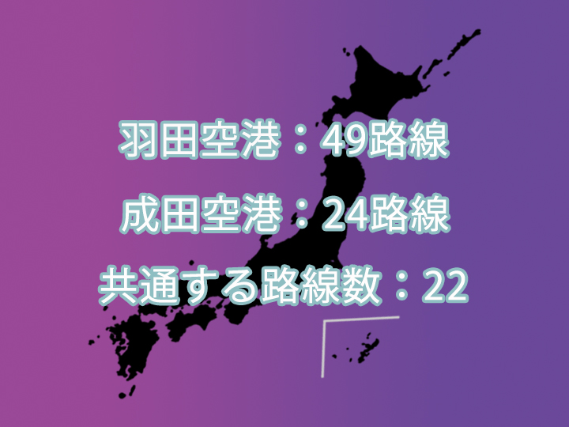

目的地で比べる

羽田空港の方が成田空港よりも多くの都市へ就航しています。 しかし、成田空港から行けても羽田空港からでは行けない都市もあります。 ここでは羽田空港からでしか行けない都市、成田空港からでしか行けない都市をご案内します。
- 羽田
- 成田
北海道
- 函館空港
- 釧路空港
- とかち帯広空港
- 旭川空港
- 稚内空港
- 女満別空港
- 根室中標津空港
- オホーツク紋別空港
東北
- 青森空港
- 秋田空港
- 山形空港
- 大館能代空港
- 三沢空港
- 仙台空港
中部
- 富山空港
- 能登空港
- 新潟空港
近畿
- 神戸空港
- 南紀白浜空港
中国
- 岡山空港
- 萩・石見空港
- 山口宇部空港
- 岩国錦帯橋空港
- 鳥取空港
- 出雲空港
- 米子空港
四国
- 徳島空港
関東
- 八丈島空港
- 大島空港